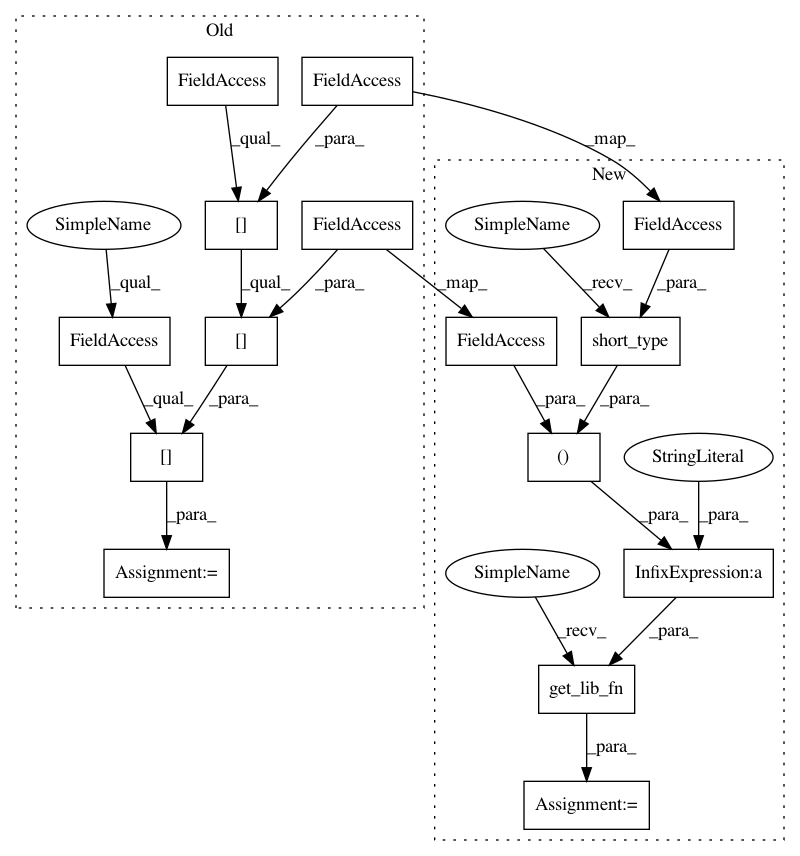

7927c56133dbf7ed60e951a51490a6d17d50f44c,ants/utils/channels.py,,split_channels,#Any#,72
Before Change
>>> len(imgs_unmerged) == 2
>>> imgs_unmerged[0].components == 1
split_channels_fn = lib.__dict__[_split_channels_dict[img.pixeltype][img.dimension]]
itkimgs = split_channels_fn(img.pointer)
antsimgs = [iio.ANTsImage(itkimg) for itkimg in itkimgs]
return antsimgs
After Change
>>> len(imgs_unmerged) == 2
>>> imgs_unmerged[0].components == 1
libfn = utils.get_lib_fn("splitChannels%s%i" % (utils.short_type(img.pixeltype), img.dimension))
itkimgs = libfn(img.pointer)
antsimgs = [iio.ANTsImage(itkimg) for itkimg in itkimgs]
return antsimgs
In pattern: SUPERPATTERN
Frequency: 3
Non-data size: 15
Instances
Project Name: ANTsX/ANTsPy
Commit Name: 7927c56133dbf7ed60e951a51490a6d17d50f44c
Time: 2017-09-24
Author: ncullen.th@dartmouth.edu
File Name: ants/utils/channels.py
Class Name:
Method Name: split_channels
Project Name: ANTsX/ANTsPy
Commit Name: 7927c56133dbf7ed60e951a51490a6d17d50f44c
Time: 2017-09-24
Author: ncullen.th@dartmouth.edu
File Name: ants/registration/reorient_image.py
Class Name:
Method Name: get_center_of_mass
Project Name: ANTsX/ANTsPy
Commit Name: 7927c56133dbf7ed60e951a51490a6d17d50f44c
Time: 2017-09-24
Author: ncullen.th@dartmouth.edu
File Name: ants/registration/reflect_image.py
Class Name:
Method Name: reflect_image